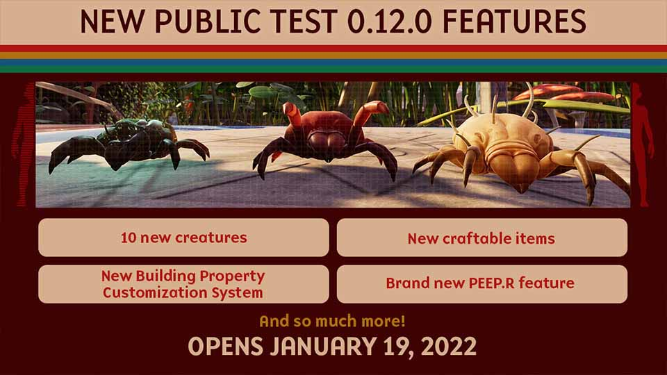

It tipped over and opened up another area to the backyard. Shucks. I guess we'll just open up that area of the backyard and release Public Test 0.12!
Note for the test: The new areas are still in active development. We encourage everyone to build in these areas for feedback and testing purposes, but please keep in mind that the terrain and objects in these areas might shift or move before the official 0.12 release. Please also keep in mind that as we continue to add new items to the game during this testing period, there is always a chance that anything you build in the test may not work as expected when moving from the test to the live build. Thank you!
The test is optional, but we always appreciate the extra help! Please keep in mind that this game is still in the early development phase, and there is always a risk when testing out new features. Any progress you make on the test server may or may not carry over, so please keep this in mind when you join. We love having you all help us and appreciate it greatly.
After joining the test server, be sure to join our Discord server if you haven't yet so that you can chat with others who are testing! Not only that, you'll have an easy way to share your feedback and suggestions with the community and directly with the dev team as well!
We hope you enjoy your time in the Public Test Server and stay tuned for more Grounded news!
Stay safe, and stay Grounded!